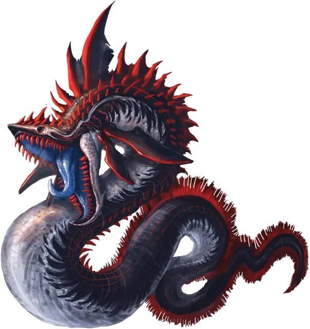

Скользящий бладфин
Slithering Bloodfin
Большая Аберрация, без мировоззрения

Класс Доспеха 16 (природный доспех)
Хиты 93 (11к10 + 33)
Скорость 5 футов, плавая 50 футов
| мод | спас | ||
|---|---|---|---|
| СИЛ | 20 | +5 | +5 |
| ЛОВ | 14 | +2 | +2 |
| ТЕЛ | 16 | +3 | +3 |
| мод | спас | ||
|---|---|---|---|
| ИНТ | 2 | −4 | −4 |
| МДР | 10 | +0 | +0 |
| ХАР | 3 | −4 | −4 |
Навыки Восприятие +4
Иммунитет к урону яд
Иммунитет к состояниям отравление
Чувства слепое зрение 100 футов (слеп за его пределами), пассивное Восприятие 14
Опасность 9 (5000 опыта)
Бонус мастерства +4
Особенности
Предсмертная вспышка. Когда бладфин умирает, он взрывается облаком ядовитой крови. Каждое существо в пределах 10 футов от взрывающегося бладфина должно совершить спасбросок телосложения Сл 15, иначе получит 10 (3к6) урона ядом. Существо находящееся внутри бладфина, когда он взрывается, падает ничком в пространство, ранее занимаемое бладфином и больше не ослеплено и не опутано им.
Подводное дыхание. Бладфин может дышать только под водой.
Действия
Мультиатака. Бладфин совершает одну атаку Укусом и одну атаку Хвостом.
Укус. . Рукопашная атака оружием: +9 к попаданию (с преимуществом, если целью является существо, у которого хиты ниже максимума), досягаемость 5 футов, одна цель. Попадание: 14 (2к8 + 5) колющего урона, и если целью является существо, оно становится схваченным (Сл высвобождения 15). Пока этот захват не закончится, существо опутано, и бладфин не может укусить другую цель.
Хвост. . Рукопашная атака оружием: +9 к попаданию (с преимуществом, если целью является существо, у которого хиты ниже максимума), досягаемость 10 футов, одна цель. Попадание: 19 (4к6 + 5) дробящего урона.
Бонусные действия
Проглатывание. Рукопашная атака оружием: +9 к попаданию, досягаемость 5 футов, одно существо Среднего размера или меньше, схваченное бладфином. Попадание: Бладфин проглатывает цель. Проглоченное существо становится проглоченным и перестает быть схваченным. Будучи проглоченным, существо ослеплено и опутано, и обладает полным укрытием от атак и прочих эффектов, исходящих снаружи бладфина, и получает 14 (4к6) урон некротической энергией в начале каждого хода бладфина и бладфин восстанавливает количество хитов, равное нанесенному урону некротической энергией. Бладфин может проглотить только одно существо одновременно.
Если бладфин получает за один ход 30 или больше урона от проглоченного существа, бладфин должен в конце этого хода преуспеть в спасброске Телосложения Сл 15, иначе отрыгнет существо, которое падает ничком в пространстве в пределах 5 футов от бладфина и перестает быть опутанным и ослепленным.
Описание
Покрытый опасно выглядящими малиновыми шипами и блестящей чешуей, скользящий бладфин мелькает в темных водах Незердипа. Когда он подплывает ближе, в поле зрения появляется его зубастая пасть — как раз перед тем, как он разжимает челюсти, хватает свою добычу и проглатывает ее целиком.
Скользящий бладфин похож на гигантского угря с головой, как у акулы. Он волшебным образом выкачивает жизненную энергию из проглоченной добычи и использует эту энергию для восстановления повреждений своего собственного тела.
Когда бладфин умирает, его тело взырвается. Образующаяся в результате токсичная кровь угрожает заразить близлежащих существ, пока не рассеется течением.